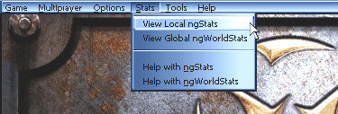

| 
http://www.NetGamesUSA.com/
is proud to provide ngStats™ and ngWorldStats™
for
Epic Games' Unreal Tournament.
ngStats is provided by NetGames USA in direct
association and partnership with Epic Games. However, ngStats is not supported supported by
either Epic Games or the publisher of Unreal Tournament, GT Interactive. Additionally, ngStats is provided to you under
certain terms and conditions.
The latest
instructions, upgrades, patches and general support using ngStats for Unreal Tournament can be
found at the following URL. You are encouraged to read through this entire help page first
if you are looking for answers to a support questions. Thanks and have fun!
http://www.NetGamesUSA.com/ngStats/UT/
General ngStats Information |
ngStats tracks performance statistics for single
player and local LAN games only. When you play games online on the Internet the ngWorldStats
system tracks your statistics and ranks you against all participating online Unreal
Tournament users. To find out more information about how the ngWorldStats
system works see
the help using ngWorldStats section for
details.
Here
is how ngStats works. By default Unreal Tournament logs all
play information to a file for each game played. ngStats can then take these logs and
turn them into detailed html based scoring, game play statistics, and High Scores
information for your viewing. You have two options at your disposal to view your ngStats as shown is the following
screenshot and described below.

While
using Unreal Tournament you can view your ngStats anytime by choosing to view
them from the "Stats" pull down menu from within the game. Select "View
Local ngStats" to view your ngStats. You may optionally select
"View Global ngWorldStats" to view your ngWorldStats from Internet games you may have
played.
You can also choose to run ngStats at anytime by selecting
"View my Local UT stats. [ngStats]" in the Unreal Tournament section of your
Windows Start Menu. ngStats will then run and open your
default web browser to view your ngStats. This method is handy if you
just want to view your ngStats without having to run Unreal
Tournament.
ngStats keeps detailed individual games
on record for a number of the most recent games played with the default being 15, before
being overwritten by new games. See the advanced options section below for details on how to
increase the maximum stored at one time.
In addition to keeping detailed information for the most recent games played, ngStats maintains a running
"Career Totals" database that keeps track of a totals summary of all statistics
from every game ever logged. If you run LAN parties and would like to learn how to use ngStats to keep track of the total
scores and statistics for such an event then visit the Unreal Tournament ngStats section at NetGames USA for
details.
http://www.NetGamesUSA.com/ngStats/UT/
The features available in ngStats and as seen on the side bar sections to the
left are described in detail below.
Individual Game Stats |
This is where game play statistics
about individual games are presented. |
| Last Game |
This is the last game that
was logged. |
| Most Recent |
Index of your most recent games
logged. The default is 15. See below to
learn how to change this number if you desire. |
The Single
Highest Scoring
Game of All Time |
Any time the total Frag
count for a game played beats the previous record then it will be permanently stored here
replacing the previous one. |
All-Time Stats |
This is where total accumulated game
play statistics are presented.
Each
section below also breaks the ngStats totals down by game type. Currently Last Man
Standing games are scored as Deathmatch games. |
| All Totals |
If you are the only person
to play on your copy of Unreal Tournament then this section simply contains a summary of
your personal Totals information in addition to Totals of any Bots that you have played
with.
If you host multiplayer games over a LAN on your local copy of Unreal Tournament then this
section also contains Totals information for all Players involved. |
| Human Totals |
Totals information from Human Players only |
| Bot Totals |
Totals information from Bot Players only |
| Rankings |
The All-Time rankings of all Humans and
Bot Players. |
| High Scores |
High Scores from Humans and Bot Players. |
| Player List |
An alphabetical list of all Players, Human
and Bots, that have ever played a game. |
Unreal Tournament
Scoring Definitions
as Presented in ngStats |
| Kills |
Number of times a player kills another
player.
Note: Both Humans and Bots are considered Players.
Also, in a team based game killing a teammate does not count as a Kill, these are totaled
separately in TK - Team Kills and detract from the players Frags and the Teams Frags as a
whole. |
| Suicides |
Number of times a player dies due to an
action of their own cause such as drowning, falling to death, or fatal splash damage from
a weapon they fired. |
| Frags |
A players Frag count is their
Kills minus their Suicides.
Note: In a team based game Frags are
Kills minus Suicides minus Team Kills |
| Deaths |
Number of times a Player has
been killed by another player.
Note: Suicides do not count as a Death as they are tracked separately.
Note: In a team based game Deaths do not include being killed by a teammate. These deaths
are totaled separately in TD - Team Deaths.
Additionally, in a Weapon Specific Information table Deaths are the number of times a
player died while holding that weapon. |
| F K D S |
Some Teamplay games such as Domination have
abbreviated titles for Frags, Kills, Deaths and Suicides as F, K, D and S respectively. |
TK
(Team Kills) |
Number of times a player in a team
based game has killed someone on their own team. Team Kills subtract from a players
personal Frags and thus the teams Frags as a whole. |
TD
(Team Deaths) |
Number of times a player in a team
based game has been killed by someone on their own team. |
CTF Scoring
and
Flag Events |
CTF Scoring |
7 points per Flag Capture
4 points per Flag Kill
1 point per Frag |
| CTF Totals |
Note: Team Totals are just Flag
Captures and do not equal the "Total" of the individual players. A Player's
Totals are their total CTF Scoring from above. |
| Flag Captures |
A Player touching the opposing flag
with their own flag. |
| Flag Kills |
Killing an opposing player who is carrying
your flag. |
| Flag Assists |
Carrying the flag at least once during a
successful capture, but not actually capturing it. |
| Flag Saves |
A Player picking their own flag up and
causing it to return to base. |
| Flag Pickups |
A flag picked up either in the field
or from "in place" from the opposing base. |
| Flag Drops |
Anytime a Player drops the flag
regardless of cause. |
| Last Man Standing |
Lives count down from the frag limit.
The last player with any lives left wins. |
Domination
and
Assault
Scoring |
See the Unreal Tournament manual for details. |
| Efficiency |
For Kills:
Kills/(Kills+Deaths+Suicides+Team Kills)
For vs. another Player:
Kills vs. Player/(Kills Vs Player + Deaths by Player)
For a Weapon:
Kills with Weapon/(Kills with Weapon + Deaths while holding the Weapon + Suicides with the
Weapon) |
| FPH |
Frags Per Hour
Frags/Time of Play
(in Hours)
Frags Per Hour can be used as a relative indicator of skill in a game where different
players entered the game at different times. |
Avg.
TTL |
A players Average Time to Live.
This measures a players average amount of time in seconds they live after each respawn in
a game. |
| Ping |
The average ping of a player during
a game.
Ping is the round trip delay in milliseconds that your computer has to the game server.
Although there are other factors that contribute to the overall quality of your
connection, in general the lower your ping the better. |
Time/
Hours |
Time in individual game
stats is minutes played.
In Total Game Stats it is expressed in hours. |
Killing
Sprees |
In Unreal Tournament, a Player who
kills a large number of enemies without dying gains the special status of being on a
"Killing Spree."
List of the consecutive Frag counts at which various
spree status is granted:
| 5 |
-
|
Killing
Spree! |
| 10 |
-
|
Rampage! |
| 15 |
-
|
Dominating! |
| 20 |
-
|
Unstoppable! |
| 25 |
-
|
God
Like! |
Sprees are promoted to the next level when obtained, meaning a single instance
of 10 kills with out dying counts as a single Rampage, not as a Killing Spree and a
Rampage in your ngStats. Individual Sprees and why they ended during a particular game are
listed in the Game Summaries section of that games ngStats. |
Multi
Kills |
Multi Kills are noted for each player.
Every time a player makes a kill they have up to 3 seconds to make another kill. Go from
one kill to two in less than 3 seconds and it is a Double Kill, get another kill in less
than 3 seconds and it is a Multi kill, etc. The complete list in order is:
| Double
Kill |
| Multi
Kill |
| Ultra
Kill |
| Monster
Kill |
Just
as with Killing Sprees, Multi Kills are promoted to the next level. This means if you kill
5 or 15 Players with a single Redeemer shot for instance they both will be recorded as a
single Monster Kill. |
Head
Shots |
Kills due to a precise shot to the head of
the Victim, causing instant death. |
First
Blood |
First player to get a kill in a game. |
Special Notes and Advanced Options |
In the "Most Recent -
Individual Game Stats" section the maximum number of individual games' ngStats that are kept before they
start getting deleted in favor of the newer ones and is controlled by a variable:
Max_Most_Recent X
Where X is set to 15 by default. This variable is kept in a config file, ngStatsUT.cfg
located in the following path under your Unreal Tournament directory:
\NetGamesUSA.com\ngStats\ngStatsUT.cfg
You may increase it if you wish by editing this file with a text editor. The maximum
allowed is 1000. Keep in mind the higher this is set the more disk space is required to
keep the ngStats html from each game so increase it based on
your needs and available disk space. Also be very careful to leave the formatting of
the ngStatsUT.cfg file in place. Do not remove the "Tab" character in front of
the number.
Note: All Time Stats are cumulative and never get deleted.
Resetting your ngStats
If for some reason you wish to reset or clear your ngStats back to zero so you can
start over you may do the following. However, be forewarned that there is no way to undo this
procedure and you will loose all previous local ngStats you have accumulated. Your global ngWorldStats will not be effected at all
by this procedure.
Go to the following path in your Unreal Tournament directory:
\NetGamesUSA.com\ngStats\data
and delete every file located in the "data" directory. The next time you play
Unreal Tournament and choose to view your ngStats they will be reset. All of the old html
will automatically be deleted at this time also.
Incomplete
Log Files
Unreal Tournament creates logs as temporary files with a ".tmp" extension when a
game has not yet completed and is in progress. If a game did not properly complete for
instance if it did not reach a timelimit, fraglimit, capture limit etc. and the game was
manually quit or crashed then the logfile will be incomplete and left as a temporary file.
ngStats can either ignore them or process
them at your discretion controlled by the variable "LogTmpFiles" in the config
file, ngStatsUT.cfg located in the following path under your Unreal
Tournament directory:
\NetGamesUSA.com\ngStats\ngStatsUT.cfg
You may edit this file with any text editor and set it to either:
LogTmpFiles = true or false
Note: A game's temporary logfile must be at least 2 hours old before it will be processed
by ngStats. This is to protect .tmp log files
on servers running multiple games at once. If you wish to process it sooner you will need
to go to the UnrealTournament/Logs dir and change it's file extension from
".tmp" to ".log" and run ngStats manually. See above for details on how to run ngStats manually.
These are
but two possible examples. If you wish to obtain information on how to run ngStats manually for any reason then
visit the ngStats section at NetGames
USA,
http://www.NetGamesUSA.com/ngStats/UT/
If you are
responsible for an Internet based server you may run both ngStats and ngWorldStats simultaneously. This way you can keep a
local record of your server while still having game play on it included in ngWorldStats.
If you
run LAN Parties, servers for Clan use, or just for fun you can add your own customizable
logo to the side bar of your copy of ngStats. You can even go one step
further and create custom "skins" and change the entire look and feel of ngStats for yourself and others to enjoy. For
details and instructions on how to make or use custom skins visit the Unreal
Tournament ngStats section at NetGames
USA,
http://www.NetGamesUSA.com/ngStats/UT/
Thank you, Have Fun and Happy Fragging!
|